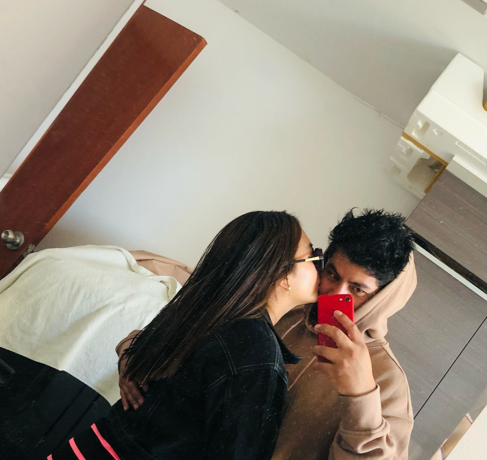
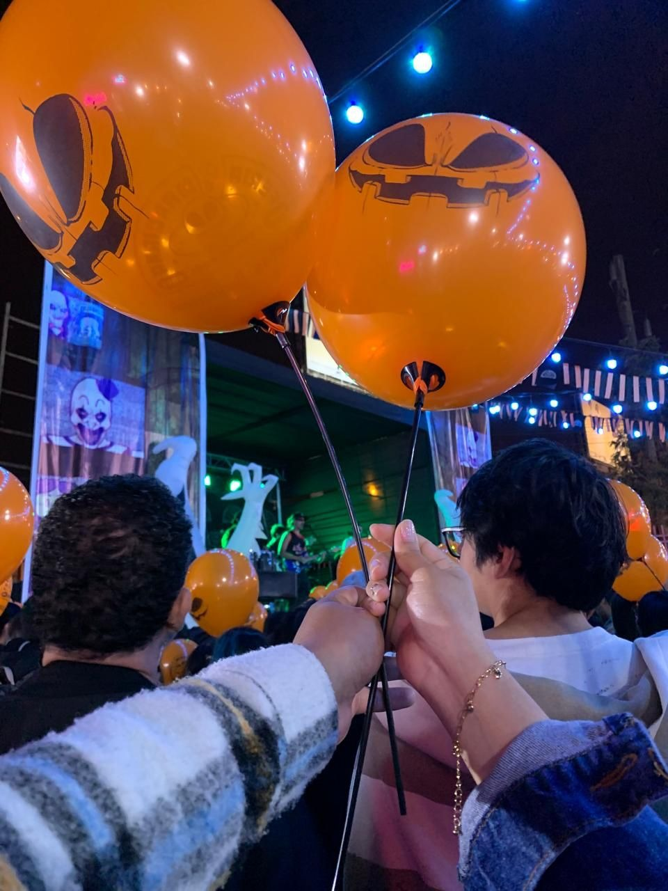

Hola Milagros, hoy me encuentro reflexionando sobre todo lo que hemos vivido juntos a lo largo de estos años. Más de cinco años compartiendo momentos, sueños y proyectos, y sin embargo, me doy cuenta de que en ocasiones he fallado en hacerte sentir el amor y la confianza que mereces. Me duele profundamente saber que he causado en ti dudas e inseguridades, sobre todo cuando te quiero más que a nada en este mundo.
Sé que lo que estás sintiendo es real y que mi comportamiento, aunque no lo haya hecho con la intención de lastimarte, ha dejado huellas que aún no logro borrar. Te pido perdón desde lo más profundo de mi ser, porque sé que no mereces estar pasando por este dolor, ni sentir que has sido traicionada.
Quiero que sepas, de todo corazón, que no te he engañado. Te prometo que todo lo que he hecho en estos últimos tiempos ha sido un error, y que he aprendido de ello. Lo único que deseo es verte feliz, sentirnos en paz y recuperar la confianza que sé que podemos volver a construir. Me comprometo a ser un mejor compañero para ti, a escuchar más, a estar más presente, a ser más sincero y transparente en cada uno de mis actos. Mi amor por ti no ha cambiado, sigue siendo el mismo, e incluso más fuerte, porque ahora sé cuánto te valoro y lo que significas para mí.
💖Milagros, si pudiera elegir un lugar en el mundo, siempre sería a tu lado. Este 14 de febrero quiero recordarte cuánto te amo y lo importante que eres para mí. Más que palabras, quiero demostrarte con hechos que nuestro amor es lo más valioso que tengo. No importa el pasado, solo quiero mirar hacia adelante, tomados de la mano, construyendo juntos un futuro lleno de amor y felicidad. Eres y siempre serás mi mayor tesoro. Te amo con todo mi ser.🌹